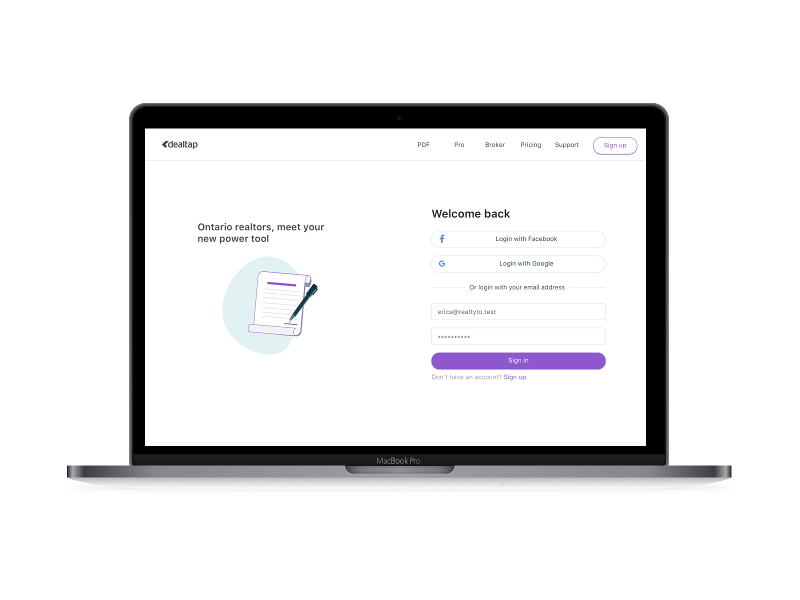

The challenge
DealTap was launched as a platform so real estate agents can handle their paperwork digitally. The product team was approached with two primary objectives —to enhance the app's functionality and usability beyond their competitors, and to design fresh visual user interfaces.
Our high level goals were to:
- • Become superior against market leaders.
- • Build an end to end ecosystem.
This would be achieved by delivering:
- • Speed and ease of use.
- • Guidance and intelligence.
- • An all-in-one tool.
The approach
Focus on goals, not features
To differentiate ourselves in an already competitive market, we needed to define a desirable role for the platform and how it would meet the needs of the users. We were thrilled by the opportunity to create something more meaningful. We used the 'UX Hierarchy of Needs' to influence our strategy.

A collaborative culture with agile UX
We opted for an agile approach which emphasised rapid sketching, prototyping, user feedback and design mockups. This created early team‐wide alignment, sparking great ideas and creating a strong sense of ownership across different disciplines within my organisation.
The discovery
The discovery phase was a quick, high‐intensity effort that allowed us to define project milestones, audit the existing work, review the competitor landscape, understand the business vision, and begin research into user needs, behaviours and pain‐points. We also kicked off a technical discovery phase to understand feasibility and constraints.
Starting on the same page
I set up a one-day workshop with key stakeholders, including CEO and management, the product team and developers. We looked at the current offering, exploratory work, competitors, and analytics and data. This meeting helped us to understand business challenges. Together we identified risks, aligned on expectations and built a shared vision for the app. Following this, I crafted an experience strategy outlining our phased approach and direction for the app.
Content audit
I reviewed every step of the platform, analyzing all user interfaces, focusing on the main functionality of creating new documents, completing forms, and signing and sharing documents. Looking at the results of the audit, there were problems with main functionality.
Competitor analysis
Looking at other platforms was important in deciding what features are a priority. Looking outside the real estate space gave alternatives for adding signatures to documents.

User research through testing
With a high level concept of what the new DealTap should be, we had to ask users what they needed. Over the course of a week, we invited in real estate agents for testing. I set up a series of tasks involving the typical user journey. Participants consisted of real estate agents with different levels of experience with DealTap, from novices to regular ‘power’ users.

After testing functionality, we ran a series of card sorting sessions, which allowed us to find users high-level thoughts around the structure of the app. After testing, we interviewed every agent about their process using DealTap and their typical daily work.
I analyzed all the user testing outcomes, comparing task completion times and the areas where participants ran into issues to find pain points. Patterns began to emerge, with problem areas around signing of documents, the document history feature and the auto-saving feature, which some users didn’t recognize was happening, leading them to looking for a ‘Save’ button.
These findings were classified as high impact issues that prevented a user from fully completing a task. Other findings were categorized as either moderate impact, which caused users difficulty but didn’t prevent them from fully completing a task, or low impact, which caused little to no difficulty.
Building empathy with personas
After studying our user feedback, we found our persona hypothesis consisted of three different archetypes which we used to facilitate discussions about our users needs, desires and varying contexts of use. Through careful analysis of our research, we identified sufficient behavioural variables to segment our user audience.


The requirements
Designing with emotion
We knew that in order for growth we needed to meet the needs of our personas while considering not only what the app should do, but also how it should feel. We believed this would be the difference between delivering a good experience and a great one.
Finding the ideal experience
I focused on how our personas think and behave rather than getting into specifics about interfaces or business goals. This helped in finding imagined ideal experiences. While keeping the scenarios at a high‐level to allow us to work fluidly and explore concepts, we decided on functionality to focus on.
I entered all the ideas into a spreadsheet and prioritised them against our personas needs, tech feasibility, and business objectives. This informed our phasing strategy for the app, and the product feature roadmap.
It was clear that there was room for improvement in terms of getting users to the main functionality - signing and sharing forms - faster. I recommended that the three areas of priority were:
- • Offer generation - Making a new document package, pre-populating fields. Setting up templates.
- • Sign and share - Easily manage role-based sharing (view only, edit, sign, edit & sign), signature stamps for agents and clients, security and privacy (secure FAQ sheet that is easily shareable to help increase lawyer confidence).
- • PDF markup - Redesign and rebuild entire functionality.
Decision time
Together with stakeholders and developers, as the product team we picked the ideas which best aligned with the requirements. We set up an advisory board to bring in users once a month, who could give their opinions on product developments.
The framework
Structuring the experience
After identifying the main 'plot‐points' in our scenarios, I defined the primary paths our personas would take through the app. Creating several user journeys for each of our personas was the best way to conceptualise and structure the proposed content and functionality.

I storyboarded my ideas to help design and communicate more complex interactions and flows. This was a huge time‐saver and allowed me to avoid prototyping for edge cases.
Wireframes and prototypes
I explored different visual treatments and changes in layouts, and how they could affect the typical user journey. Sketching and storyboarding, I generated ideas about the arrangement of UI, functional and data elements, and interactive behaviours. The vision began evolving into something tangible. A high‐level design language, interactions and the layout began to come together.


Testing our assumptions
When we had a fleshed-out user journey, we ran usability testing over a one‐week period to gain feedback on whether the changes to the core functionality met user needs.
We tested users on a new build, which had switched from a sidebar layout. We had decided on a layout that used a horizontal menu under the main banner menu, as we felt it would declutter the interface design. This can be seen in the prototype below:

Testing showed that this hypothesis failed, with users expecting the menu to be in the form of a sidebar. Thankfully this was a simple enough fix, and we counted ourselves lucky. After amendments to the interface designs, we continued.
After gathering feedback on results of the user testing and the user journey designs, I began work on a new design system, based on common mental models and focusing on meeting web accessibility standards.

I used aspects of emotional design to inspire users into trusting the app over their traditional pen and paper method of organizing their files. I used a stripped-back colour palette and animated elements, keeping a strong yet approachable interface design, with the aim of amplifying the positive aspects of using the app.
Overall, the interface design strives to be confident. We decided to strip back bloat from the previous design, aiming to cut out any unnecessary elements. We decided on clear, readable typography, choosing colours with high contrast.
Legibility was a huge factor, as the content had to be readable in the different environments real estate agents work in, including any outdoors or low-light conditions. The design is uncluttered, clean, large and well spaced. The design decisions help to show a sense of confidence in the design.
Implementation
The app was primarily designed to support users on-the-go. Users can depend on their prior experience with electronic signature platforms, and existing administration panel design conventions to help them learn to use the app.
In 2019, Dealtap was acquired by Remine and this UX research has been absorbed into their product optimization.